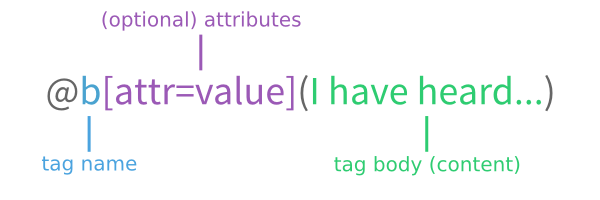

Below is the complete reference to the Scriba format.
Basics

This is a begin/end block:
@begin(tag)
content
@end(tag)
Paragraphs don't have to be explicitly marked up, they are automatically determined by two newlines. That is, the following:
This is a paragraph
This is another paragraph.
Will produce:
This is a paragraph
This is another paragraph.
Formatting
The following tags provide basic formatting:
@b- Bold text.
@i- Italicized text.
@u- Underlined text.
@strike- Striked-out text.
@c- Inline code.
@sup- Superscripted text.
@sub- Subscripted text.
For instance, the following:
This text is @b(bold), this is @i(italics), and this is @c(code). You might also
want @u(underlined) text.
The speed of light is 3x10@sup(8) meters per second. The symbol for the
permittivity of vacuum is ε@sub(0).
Will produce the following:
This text is bold, this is italics, and this is
code. You might also want underlined text.The speed of light is 3x108 meters per second. The symbol for the permittivity of vacuum is ε0.
Sections
Unlike HTML and Markdown, where sections are implicit in the positions of headings, CommonDoc (and, thus, Scriba) makes sections explicit blocks.
@begin(section)
@title(Section)
@begin(section)
@title(Subsection)
@begin(section)
@title(Sub-subsection)
@end(section)
@end(section)
@begin[ref=section-id](section)
@title(Another subsection)
@end(section)
@end(section)
The indentation above is optional, normally, section tags are flat.
Lists
Scriba provides three types of lists: unordered, enumerated, and definition lists.
Unordered
Unordered lists can be created with the @list tag. Individual list
items go in @item tags.
@begin(list)
@item(An item.)
@item(In @i(a) list.)
@end(list)
This will produce the following:
- An item.
- In a list.
Enumerated
Enumerated lists can be created with the @enum tag. As in unordered
lists, list items use @item tags.
@begin(enum)
@item(The first item.)
@item(The second item.)
@item(Third.)
@end(enum)
Will produce this:
- The first item.
- The second item.
- Third.
Definition
Definition lists can be created with the @deflist tag. Inside the tag
there are alternating @term and @def tags. For instance,
the markup below:
@begin(deflist)
@term(VerTeX)
@def(A markup language with text syntax.)
@term(Scriba)
@begin(def)
A markup language with Scribe syntax.
As you can see, you can use regular tags and begin/end ones interchangeably.
@end(def)
@end(deflist)
Will produce this:
- VerTeX
- A markup language with text syntax.
- Scriba
A markup language with Scribe syntax.
As you can see, you can use regular tags and begin/end ones interchangeably.
Code
The lang attribute is a string identifying the language of the code. No
restrictions are placed on this value.
The following markup:
@begin[lang=lisp](code)
(defun fact (n)
(if (= n 1)
1
(* n (fact (1- n)))))
@end(code)
Will produce:
(defun fact (n) (if (= n 1) 1 (* n (fact (1- n)))))
You can also use the include contrib to include code from a file, or a subrange within a file.
Links
Internal
The following markup:
@begin[ref=data-table-3](table)
@row(@cell(@b(A)) @cell(@b(B)) @cell(@b(C)))
@row(@cell(1.23) @cell(3.14) @cell(4.5))
@end(table)
...
See the third @ref[id=data-table-3](table) for the data.
Will produce the following table and link:
A B C 1.23 3.14 4.5 ...
See the third table for the data.
You can also link to nodes inside other documents, where a document is identified by a string:
For a more thorough discussion, see @ref[doc=aima id=search](the AIMA chapter)
on search algorithms.
External
You can link to external URLs using the @link tag. This:
Visit @link[uri="https://www.google.com/"](Google).
Will produce:
Visit Google.
Images & Figures
You can link to images in the filesystem relative to the document:
@image[src=path/to/image.png]()
Or to images on the web. For instance, a Travis build status badge:
@image[src="https://travis-ci.org/eudoxia0/crane.svg?branch=master"]()
will produce:

Tables
@begin(table)
@begin(row)
@cell()
@cell(@b(Peach))
@cell(@b(Egg))
@end(row)
@begin(row)
@cell(@i(Fat))
@cell(0.25g)
@cell(10.6g)
@end(row)
@begin(row)
@cell(@i(Protein))
@cell(0.91g)
@cell(12.6g)
@end(row)
@end(table)
Produces the following:
Peach Egg Fat 0.25g 10.6g Protein 0.91g 12.6g
Note that the indentation in this example is completely optional.